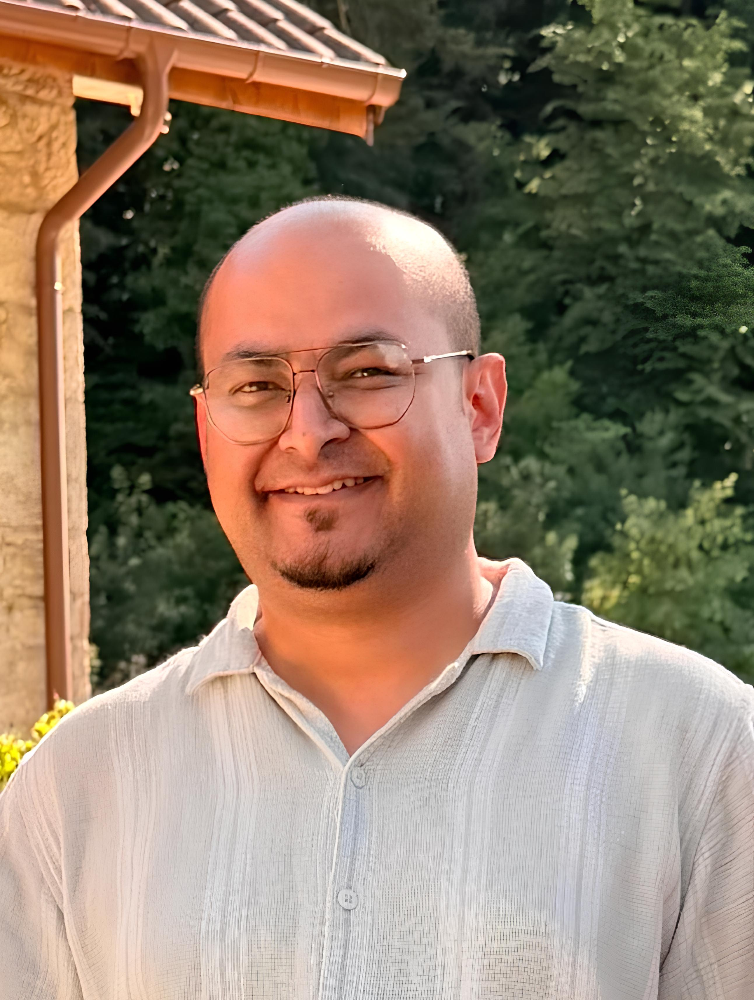

Université Claude Bernard Lyon 1, France
I am a Physicist and materials scientist working in the fields of plasmonic nanomaterials, photoelectrocatalysis, photocatalysis, laser synthesis of nanoparticles, spectroscopy, and environmental remediation technologies. My research focuses on understanding charge-transfer dynamics and designing advanced functional materials for sustainable energy and environmental applications.
Plasmonic Nanoparticle Enhanced CuO/BiVO₄ Heterojunctions for Photoelectrocatalytic Pollutant Degradation
Marie Skłodowska-Curie Actions Postdoctoral Fellowship
December 2025-Present — Marie Skłodowska-Curie Postdoctoral Fellow, Institut Lumière Matière, Université Claude Bernard Lyon 1, France
April 2019-November 2025 — Assistant Professor, Department of Physics, Pandit Deendayal Energy University, Gandhinagar, Gujarat, India (Currently on Lien)
2019 — PhD in Physics — IIT Guwahati, India
2012 — M.Sc. in Physics — Department of Physics and Astrophysics, University of Delhi, India
2009 — B.Sc. (Hons.) in Physics — Hindu College, University of Delhi, India
For a complete and updated list of publications, citations, and research metrics, please visit my Google Scholar profile.
Professional Email:
prahlad-kumar.baruah@univ-lyon1.fr
Alternative Email:
prahlad.baruah.physics@gmail.com
ORCID:
https://orcid.org/0000-0001-8826-9634